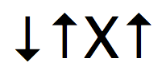
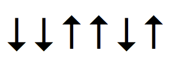
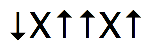
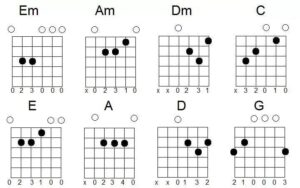
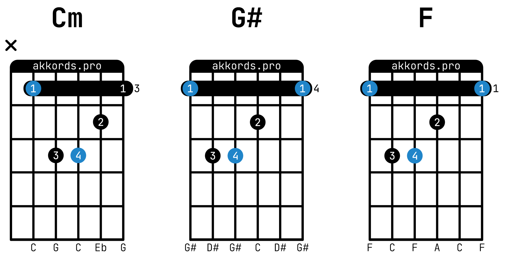
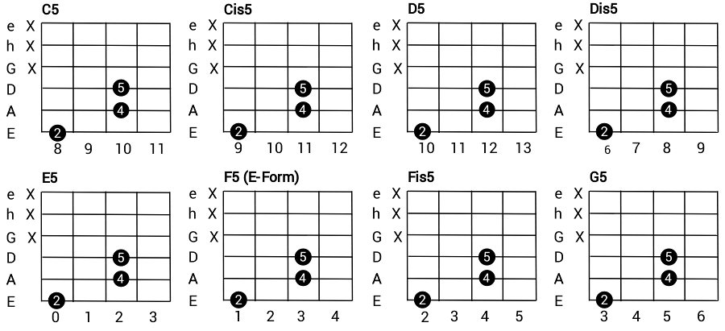
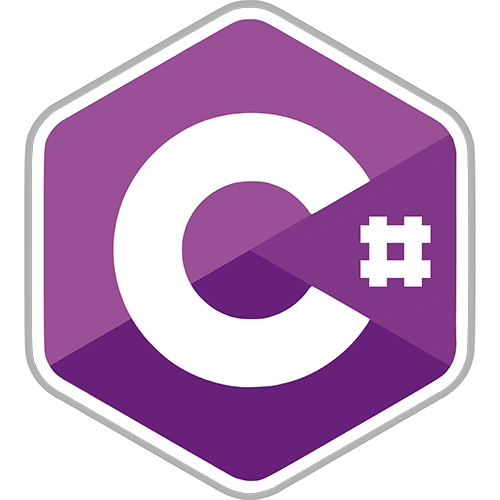

ШТЫРЕВ ГЛЕБ СЕРГЕЕВИЧ
ВВЕДЕНИЕ
Привет дорогой читатель! Меня зовут Глеб, я учусь в ИРНИТУ на 2 курсе на направлении "Информационные системы и технологии". Этот сайт обо мне и о том, чем я занимаюсь. Я считаю себя довольно разносторонней личностью, но здесь я написал о своих основных увлечениях. Приятного чтения!
ИГРА НА ГИТАРЕ
Начнем с моего хобби. Игрой на гитаре я занимаюсь уже на протяжении года. За это время довольно многому научился:
ГИТАРНЫЕ БОИ
Для начала разберемся с понятием Гитарный Бой. Гитарный Бой - самый известный приём игры на гитаре. Заключается в ударном звукоизвлечении (отсюда и название), резким, но скользящим ударом — по отдельным, рядом расположенным, струнам, либо по всем сразу.
В моём арсенале есть такие бои как "Четверка", "Шестёрка" и "Восьмёрка".
Четверка
Бой в котором 4 ударных движения вниз-вверх-вниз-вверх, либо вниз-вверх-приглушение-вверх
Шестерка
Бой в котором 6 ударных движения вниз-вниз-вверх-вверх-вниз-вверх
Шестерка c приглушением
Бой в котором 6 ударных движения вниз-приглушение-вверх-вверх-приглушение-вверх
Восьмерка
Бой в котором 8 ударных движения вниз-вниз-вверх-вверх-вниз-вниз-вниз-вверх
АККОРДЫ
Также начнем с определения. Аккорд - гармоническое сочетание нескольких нот, исполняемых одновременно на гитаре.
Есть несколько видов аккордов:
Простые аккорды
Аккорды в которых чаще всего используется не более двух пальцев и каждый палец зажимает по одной струне. Эти аккорды просты в освоении и в основном из них состоят гитарные песни "у костра"
Барэ аккорды
Более сложные аккорды, которые далеко не сразу даются новичкам. Их сложность заключается в том, что указательным пальцем нужно зажать одновременно все струны, а средним, безымянным и мезинцем зажать еще по одной струне
Квинт аккорды
Аккорды которые часто используются в музыкальном жанре "металл". Чтобы зажать такой аккорд, нужно зажать мезинцем и безымянным пальцами 4 и 5 (либо 3 и 4) струны на одном и том же ладу, а средним пальцем зажать 6 (5) струну на 2 лада ниже и приглуштить оставшиеся струны
ПРОГРАММИРОВАНИЕ
Теперь же перейдем на мою специальность. Программирванием я занимаюсь уже на протяжении 8 лет. За это время работал немало изучил:
ЯЗЫКИ ПРОГРАММИРОВАНИЯ
За время обучения программированию для выполнения разных задач нужны были разные языки программирования:
C++

Мой первый язык программирования. Я начал изучать его еще когда учился в Лицее, но углублённое изучение началось на перовм курсе.
Один из самых сложных ЯП, ибо в нем всё, вплоть до управления паматью отдается под ответственность программиста.
С C++ началось моё знакомство с ЯП и после освоения его, другие ЯП, давались намного проще.
На этом ЯП была написана моя курсовая работа "Игра САПЁР"
Python

ЯП, который я начал изучать специально для ЕГЭ.
Один из простейших ЯП, одна и та же программа на Python будем занимать намного меньше строк чем на том же C++, поэтому выбор ЯП для сдачи ЕГЭ, где время самый важный ресурс был очевиден.
Python пригодился мне не только на ЕГЭ. У этого ЯП очень большая предметная область и с каждым днем она увеличивается
C#
Одно из основных моих занятий - разработка игра на Unity, который работает именно с этим ЯП
По синтаксису похож на C++, но с этого языка также началось моё изучения ООП
Этот ЯП я использую чаще всего в своей работе и с его помощью мной было созданно уже более 3 проектов
Java

ЯП, который я начал изучать позже всего, но его осовение не заняло много времени после работы на C++ и C#.
На этом ЯП в университете происходит изучение ООП.
Из-за того, что я начал изучать Java так недавно, у меня еще нет проектов с использованием этоо ЯП
МОДЕЛИРОВАНИЕ
Так же я изучаю моделирование:
ПРОГРАММЫ
Моделирование - не самое моё развитое умение, но за время изучения успел поработать в нескольких программах:
Компас
Программа для создания моделей и их чертежей, которую я изучал во время обучения в Лицее.
С этой программой я также начинал своё изучение инженерной графики
NanoCAD
Программа о которой я узнал в ИРНИТУ
В этой программе мы работали на занятиях по инженерной графике
чем-то похожа на Компас
Blender

Программа которую я изучал самостоятельно из-за личного интереса
В этой программе можно создавать 3D-модели. Мне это было очень интересно и поэтому изучение проходило по обучающим роликам
В этой программе я до сих пор работаю и каждый день улучшаю свои навыки